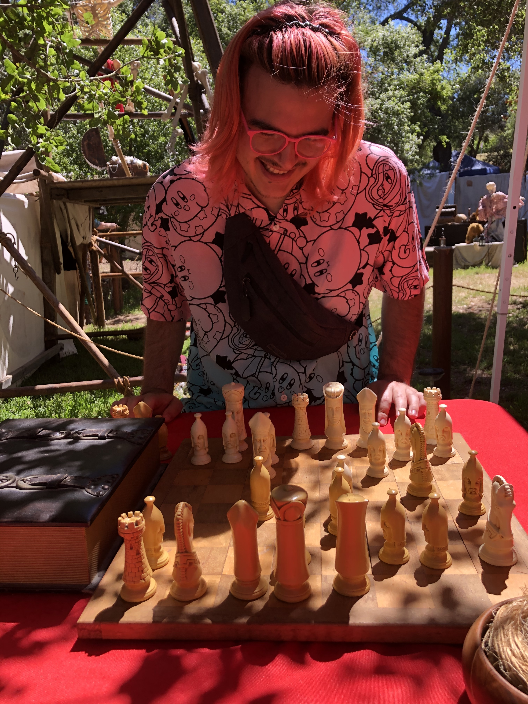
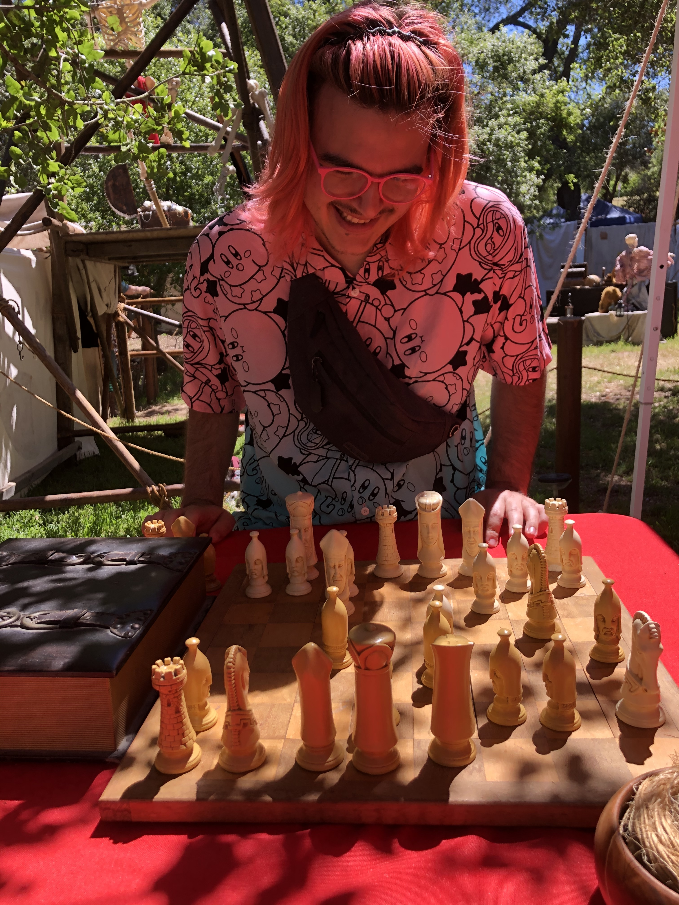

Ahhhh I got excited about sharing a "graphic novel" I found recently called: "My Shadow Is Purple" by "Scott Stuart".
Have you heard about it?
It's a children's book about nonbinary gender and I swear I cried a good ugly cry the first
time I read it.
!!!! Nonbinary graphic novel rec!!!! Thank you!! I haven’t had a chance to read it yet but I have heard of it, I’m
always trying to find representation for my nibling (they’re 10 & yearning for they/them content) so I’m peripherally
aware of most gender books but haven’t had the chance to get through them all yet. I’ll check it out at the library this
week!
Honestly children’s books dealing w gender can hit SO hard and in a very good healing way for your inner child, I have
ugly cried over a few too :]
Is it more fun to be a magician or the Easter bunny?
I think maybe graphic novel might be the wrong category to place it in upon further consideration, it's more like a
children's story with pictures. But I loved it to death. My brother is 10 and would probably respectfully sit with me if
I tried to read it to him, but also would rather play smash bros or run in a circle aimlessly.
Easter bunny was cool because there's something inspiring confidence about being in a full costume entertainment
position. Like eyes are on you, but not on you? Kids react with joy, and I can do silly mascot-like behaviors and be
praised without feeling the performance anxiety. The costume was hot and uncomfortable though.
Being a magician is way more anxiety provoking, and recovering from failed tricks can be a skill and a half. But there's
something neat about knowing some magic tricks, or just a fascination with illusions in general. Having an understanding
regarding the relationship between our senses and the experience of observing the world around us
May I have a recommendation for a graphic novel? I'd love to get a taste of your interests.
I'm thoroughly entertained and captivated by your lighthearted and fun expressions in your profile. The picture of your
cat mooning me is killing rn ♥️
you're good, I don't discriminate against picture books! the book that hit me the most that i got them is a nonbinary
picture book called From the Stars in the Sky to the Fish in the Sea :] Aw that's so sweet, little brothers are the best
❤️ & honestly big fan of running in a circle aimlessly sometimes when I get a burst of excitement I need to spin in a
circle. Do you have any other siblings?
I love the way you describe full costume entertainment & kids reacting with joy! I totally relate to the eyes on you but
not on you, I also get performance anxiety. Not that I do theater or entertainment stuff really, but back in high school
I did a few plays. I've always felt such sympathy for people in full costume because I've assumed they must be hot
inside, it's impressive!
Oh I can't imagine recovering from a failed trick I think I would just explode on the spot! That's not a skill and a
half that's like a skill x 10!! I used to be obsessed with watching magic acts on tv talent shows a few years ago, there
is something about it that charms me wholly. What's your favorite trick?
I am always eager to give recommendations!! Hmmmmm...oh this is hard to just pick one! I really love The Montague Twins
by Nathan Page & Drew Shannon which has both beautiful art & storytelling about twins with magic solving a mystery.
That's not the best summary but I have a hard time being concise & I'm already taking up so much rambling so that's the
best I can do! Also Shadow of The Batgirl by Sarah Kuhn holds a special place in my heart because I love comics.
Aww, thank you!! üôà‚ù§Ô∏è I'm glad miss Monkey (mooning cat) gave you a laugh! You have a very sweet smile and I love your
pink frame glasses ❤️
I love your full in depth replies. If I don't respond just know it's because sleep has claimed me, I am eager to give
your messages my undivided attention.
Another nb book to add to my list! ✨✨✨ My heart, it soars.
Hahaha zoomies are a shared delight, I would join the circle spin. I have no full blood siblings, and there's a big age
gap between me and my oldest sibling. I affectionately refer to myself as the highschool mistake, and my mother
protests. I have two half sisters by my father, one half brother by my mother, and I had two step-sisters though our
relationship is a question mark at this point with my mom's ~recent divorce. The ages range from 6-17 among my siblings.
I love them very much and think it's so cool to see them develop thoughts about existing. They go from trying to eat
dirt as children to successfully eating the dirt because I guess I'm not going to stop them as adolescents üòÇ
It's been a good amount of time since I worked in entertainment... (1/?)
... but I look fondly back at the memories. I initially found the work because my friend wanted to be a princess and we
stumbled into entertainment work where she could actually work as a princess.
Does performance anxiety make the type of activity something to avoid or just less comfortable for you?
Ooo did you ever see criss angel on tv? I remember being excited about his show. I'm often teased about doing magic
tricks from time to time üíñ my bestie recently told me it was the most concerning thing about me when we met, which
feels like a backhanded compliment? All with non-malicious intent of course.
If you exploded that would be more impressive than any trick I could do. My favorite is one where I have someone write a
number on a piece of paper, rip it up, burn it, then I can recite the number. I think I'm mostly fond of it because it
involves fire and that's always a good flare :)
I enjoy your "rambling" and only want to encourage it. I've actually been... (2/?)
in the mood for some new content so this fills my own selfish interests too!! I'm excited to read your recommendations.
♥️♥️♥️♥️♥️ What a great name! Monkey is fantastic, and your happiness next to her is contagious.
Let me see if I can't find a picture of Aura! You might enjoy her
This is my mom's / my cat. Was mine before I moved out way back when but she stayed with mom.
Sleep is claiming me, but I look forward to hearing from you again. Sleep well Finn!
OH MY GOD BEAUTIFUL CAT!!! I LOVE YOU AURA ü•∫ü•∫ü•∫!! I‚Äôm falling asleep too but needed to appreciate kitty first :] good
night & sweet dreams üåô üíå
As the universe expected, it did not take long for the silliest goofball to be
completely enamored with princess garbanzo bean.
And, fortunately, princess garbanzo bean was equally charmed by their present.
Any chance you're free for a little call?
And a first call led to...
It might be too short notice, but any chance we could have dinner together
Wednesday? I’m looking at an Indian food place I think would be near you: 1337 Encinitas Blvd
 
